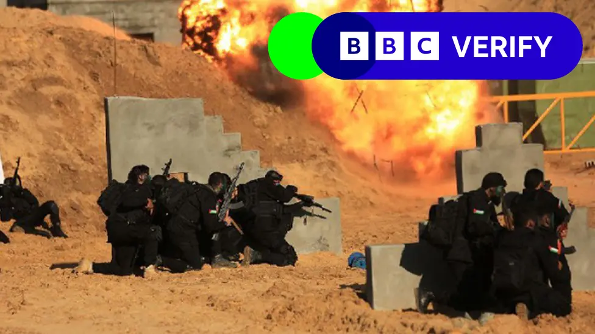
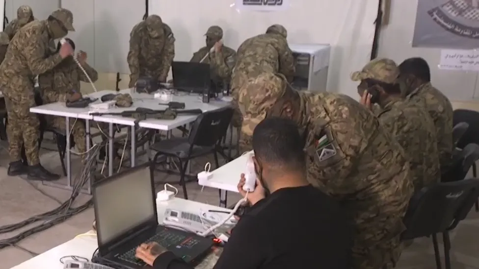

How Hamas built a force to attack Israel on 7 October

Five armed Palestinian groups joined Hamas in the deadly 7 October attack on Israel after training together in military-style exercises from 2020 onwards, BBC News analysis shows.
- The groups carried out joint drills in Gaza which closely resembled the tactics used during the deadly assault - including at a site less than 1km (0.6 miles) from the barrier with Israel - and posted them on social media.
- They practised hostage-taking, raiding compounds and breaching Israel's defences during these exercises, the last of which was held just 25 days before the attack.
- BBC Arabic and BBC Verify have collated evidence which shows how Hamas brought together Gaza's factions to hone their combat methods - and ultimately execute a raid into Israel which has plunged the region into war.
- Prior to 2018, Hamas had formally coordinated with Palestinian Islamic Jihad (PIJ), Gaza's second largest armed faction and - like Hamas - a proscribed terrorist organisation in the UK and other countries.
- Hamas had also fought alongside other groups in previous conflicts, but the 2020 drill was billed in propaganda as evidence a wider array of groups were being unified.
- Hamas's leader said the first drill reflected the "permanent readiness" of the armed factions.
- The 2020 exercise was the first of four joint drills held over three years, each of which was documented in polished videos posted on public social media channels.

- While these groups are drawn from a broad ideological spectrum ranging from hard-line Islamist to relatively secular, all shared a willingness to use violence against Israel.
- Hamas statements repeatedly stressed the theme of unity between Gaza's disparate armed groups. The group suggested they were equal partners in the joint drills, whilst it continued to play a leading role in the plans to attack Israel.
- Footage from the first drill shows masked commanders in a bunker appearing to conduct the exercise, and begins with a volley of rocket fire.
- It cuts to heavily armed fighters overrunning a mocked-up tank marked with an Israeli flag, detaining a crew member and dragging him away as a prisoner, as well as raiding buildings.
- We know from videos and harrowing witness statements that both tactics were used to capture soldiers and target civilians on 7 October, when around 1,200 people were killed and an estimated 240 hostages were taken.
Source : click here